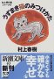

30
|
29
28
27
26
25
24
23
|
22
21
20
19
18
17
16
|
15
14
13
12
11
10
9
|
8
7
6
5
4
3
2
|
1
6/30(Mon)
-
6 月最終日
-
というのは、例の原稿の〆切日
-
自分を中心に地球は回るということで、EST で考える
(というのは、誤用の「確信犯」
(6/20/2003)、あるいは単純に「悪い子」)
-
"Powder Technology Handbook" 原稿書き
-
結局、最終日を丸一日費してしまったが、完成
-
粛々と
いつものように
置いておく
-
さて、word への変換は、どうするかなぁ
- Ref:
4/28/2006,
10/27/2005,
7/7/2003,
7/3/2003,
7/2/2003,
6/30/2003,
6/29/2003,
6/27/2003,
6/26/2003,
6/25/2003,
6/24/2003,
6/20/2003,
6/19/2003,
6/18/2003,
6/2/2003,
6/1/2003,
5/14/2003
-
「「憲法守って国滅んでは本末転倒」 麻生政調会長」
@goo
(local copy)
6/29(Sun)
-
「＜電話セールス＞ブッシュ大統領、拒否名簿を全米で作成 罰金も」
@yahoo
(local copy)
-
tele-marketing,
まじでこれには頭に来ている
(前の中国人の情報からか知らんが、中国語が多いし)
-
でも、こういうものに登録してしまう risk を考えると…
-
bush, 選挙目当ての人気取りか
-
「上海に世界最長アーチ橋が開通」
@yahoo
(local copy)
-
「お騒がせの「タトゥー」が会見 「罪の意識はない」」
@asahi
(local copy)
-
マスコミの言うことを聞かないと恐いことになる日本、
感情形成 (バッシングって奴) のプロセスは変だ
-
彼女らで一儲けしようとしていた日本の大人が、本当に沢山いるんだろう
-
彼女らが思い描いていた「日本」の現実は、どんなものだったのか
-
ところで、スーパーからキンメダイは消えなかったのだろうか
-
マスコミなり他人なりの評価に従うだけで、
自分の考えを持たず (持てず) に言いなりになる集団は、
商売する人間にとって都合がよいのだろう
-
自分で judge するという作業は、間違うことが多くても、
分業してはまずいものだと思う
-
7/2/2003 付記:
「テレ朝、タトゥーを痛烈批判…騒動で損害賠償請求も」
@yahoo
(local copy)
-
「日本のテレビ局全体が軽んじられる決着は望ましくない」
――軽んじられるくらいがちょうど良いんではないかな
-
「結果的に視聴者の期待を裏切ってしまい申し訳ない」
――味方を増やそうという戦略は、せこい
-
彼女らが自分勝手かどうかよりも、
テレビ局 (マスコミ) の思い上がりに、
問題を感じる。
彼らは何様のつもりなんだろうか…
-
自宅にて
-
"Powder Technology Handbook" 原稿書き
- Ref:
4/28/2006,
10/27/2005,
7/7/2003,
7/3/2003,
7/2/2003,
6/30/2003,
6/29/2003,
6/27/2003,
6/26/2003,
6/25/2003,
6/24/2003,
6/20/2003,
6/19/2003,
6/18/2003,
6/2/2003,
6/1/2003,
5/14/2003
6/28(Sat)
6/27(Fri)
-
「役所広司 同時代の日本にこだわる」
@asahi
(local copy)
-
「顔は長くてごっついが、心はまろやか優男。
人の難儀を見たならば、一文なしでも助けにいく。
それが僕です」
-
「校長自殺：休養願に「がんばれ」 うつの認識に欠けた対応」
@mainichi
(local copy)
- 死ななきゃ分からん人間になりたくはないものだ
(死んでも分からん人間も、結構居るんだろうけれど)
- 7/6/2003 付記:
何かひどいことになっている
- 9/12/2006:
人が亡くなるということ
-
「研究７０歳になっても 生涯一エンジニアで」
@mainichi
(local copy)
-
NY での講演、聴衆は日本人、どうしたらこういうことになるのかな
(NY にいる日本人向けの講演であったのだろうか)
-
毎日に「女性記者の視点」なるコーナーを発見
-
このコーナー、結構言いたいこと書いてておもしろい
-
毎日は記名記事が多いが、
理系白書でよく見る元村さんも、
なかなか過激だった
-
あと、中島みゆきさんもどういう人か知りたいな
(7/22/2002)
-
「科学を学ぶことは、自分を守ること」(2002/6/24)
(local copy)
-
「「励みなさい」と言われても・・・」(2002/8/12)
(local copy)
-
「若い夫婦が子どもを作らないのは、子作りに励む時間がないからではない。
こんな社会で働きながら子を産み育てることが、
どう見ても得な作業だと思えないからだろう。」
-
「科学にも「スロー」を」(2002/9/30)
(local copy)
-
「今の日本はやっぱり、スローでいいと言いながら、
どこかで15年前のバブルを懐かしがっている。強い経済、
「人並み」への執着。吹っ切れていない。」
-
「「私のこだわり」」(2002/11/18)
(local copy)
-
「ノーベル賞はもらえないけれど、私にもこだわっていることがいくつかある。
一つは「行う」という言葉を使わないで原稿を書くこと。
…それから、ペットボトル飲料を飲まないことだ。」
-
「男性は特別扱いされていないのだろうか」(2003/1/14)
(local copy)
-
「日本では反対意見が多い。
「実力で選んだ結果だ」「特別扱いは本人も苦労する」。
大学の偉い先生もそうおっしゃる。
…男性は特別扱いされていないのだろうか。
…「大学の自治」がこんなふうに利用されていたら、笑止である。
来年には、国立大学が独立法人化される。
…女性の使い方に関しては、
…「95対５」の現状を実力主義の結果だと言い続けるのか、
楽しみに見ていようと思う。」
-
6/25/2003
→
-
「宇宙飛行士、毛利さん、秋山さんに聞く」(2003/3/3)
(local copy)
-
「例えば１万円の美容液を顔にすりこむ彼女の横で
「なになに、成分は有害物質のナントカとカントカとアルコール。
こんなの、３００円で作れるよ」なんて言ってしまうのは理系人。
「いいじゃん！１万円でいい気分になれるんだから」
とムクれるのが文系人である。」
-
在宅勤務
-
"Powder Technology Handbook" 原稿書き
- Ref:
4/28/2006,
10/27/2005,
7/7/2003,
7/3/2003,
7/2/2003,
6/30/2003,
6/29/2003,
6/27/2003,
6/26/2003,
6/25/2003,
6/24/2003,
6/20/2003,
6/19/2003,
6/18/2003,
6/2/2003,
6/1/2003,
5/14/2003
6/26(Thu)
-
「「ブラック・ジャック」勝手に２６巻目作り罰金判決」
@asahi
(local copy)
-
「１冊１０万円で」
「インターネットを通じて、２冊を販売」
して「罰金３０万円」か
-
「ファン心理につけ込んだ」というのは、
需要をきちんと認識しているということなんだろう
-
個人で、商売もの程度の「本」を作るコスト
(10 万で売った本の原価) はいくらなのか
-
「From Flowing Fluids, Beautiful Images and Unlocked Secrets (BRUCE SCHECHTER)」
@nytimes
(local copy)
-
"Powder Technology Handbook" 原稿書き
-
todo: 収束方向に向けること
-
とりあえず、向きは変わった (と思う)
- Ref:
4/28/2006,
10/27/2005,
7/7/2003,
7/3/2003,
7/2/2003,
6/30/2003,
6/29/2003,
6/27/2003,
6/26/2003,
6/25/2003,
6/24/2003,
6/20/2003,
6/19/2003,
6/18/2003,
6/2/2003,
6/1/2003,
5/14/2003
-
「目先を変える」ということを
書いた
のは、日常生活の話だった
-
んだが、ここ数日の原稿書きで、
研究の方の閉じてた引出しをいろいろ (literally) 開けたりして、
ちょっと感じるものあり
-
fluctuation-dissipation を眺めていて、
そういえば佐々さんのこの辺の話はどうなったのかなぁ、とか
-
んと、それが今の SST なんだろうか
-
もっと formal な部分での現状整理は、
(確か「した」とか「する」とかあったと思ったけど)
どうなったんだろうか
-
というのは、圧倒的な他力本願モード (というと、お坊さんに怒られるが)
-
そう言えば、一時期流行った関本さんの langevin の、
そのあたりの本が出るとかいう噂はどうなったのかな
-
そっちのノリで、ちょっと考えたりもしていた
- 付記 : 岩波から出たらしい
(6/18/2004)
-
その昔蒐集した FDR 関係の 論文
(けっこう集めてた) を見返したり
-
というのは、D 論の直接的な展開方向 (の一つ) であったから
-
その時はそちらを取らず、より pure なもの
(ってのは分散系粘性流体力学) を選んだ
-
このことにより、
それまでのプカプカ・モードから脱して、海底にはたどり着けたと思う
-
まだそこから浮上出来ていないことが、最大の問題なんだが
-
もっと軟派な (というか、派手なというか、でかいというか) 選択も有ったけれど
-
それは、修論を (つまり研究を) はじめた当初の motivation
-
つまりは「流動層のうまい現象論を作る」という
-
しかしこのネタから物理屋が去っていった事実の意味は、
簡単ではないということなんだろうけれど
-
もともとそんなに居ないんだけど
-
しかし今の仕事が、もしかしたら
実はそっちの方に継っていた、というオチ (解答付き) がありうる
-
もちろん、明日できる
(手の早い人がピンと来てスコッとやってしまう)
という類のもんではない
-
植村さん
(6/18/2003)
の修論見て、どうなってんだろうと思ったり
-
流体レベルと分子レベルの記述の階層があって、
圧倒的に分子レベルに関する知識が欠乏していることを実感した
-
その癖、分布関数の記述 (fokker-plank とか smoluchowski) よりも
粒子記述 (langevin) の方が好きとか、
昔も、今も言ってるからなぁ
-
現実問題として、今実際に二流体屋さんと日々戦っているわけだが
-
彼 (ら) にすると、これまで粒子屋さんと戦って来たが、
奴らは頑固で狭量で閉鎖的で、ほとほと疲れたと言ってる
-
私は多分、粒子屋さんになるんだろうけど、
無所属新人なので、そういう下らない歴史は (意識的に) 無視
-
と同時に、その辺への関心がやはりずっとあったのか、
関連する文献を結構持っていることも発見
-
論文を読むのが徹底的に遅いし、
それゆえ必要を感じないと基本的に読まないし
-
読むために研究者になったんではなく、
研究するために読むわけだから
(言い訳半分)
-
研究者それぞれに彼ら彼女らの story があるし、
それにどっぷり浸かると、その流れでものを見てしまうし
-
それが流行で、それが流行に乗るということ
-
motivation の生成過程を cut できるので、
研究生産性は、あるいみで、高くなるんでしょう
-
そこには、しかし「寅彦的時間」は、ない
-
intro なんか読まずに、中身だけ (式だけ) 見る、という方法論も、あるのかな
-
でも個人的には、論文で一番面白い部分は intro だと思っている
-
subject を選んで、intro 選集って作ったら面白くないかな
-
あいつの展望はてんでダメだったとか、
こいつは自分の結果はショボかったが良いとこに目を付けていた、とか
-
そういう解説を書くのが、大変そう
-
と、どうも状況がそっちへ流れろと言っている気がする
-
そういう時に、無意識にブレーキを踏む自分がいるんだが
-
最近、絶対的に論文蒐集をさぼっていることは、事実だ
-
昔も、実は集めてただけなんだけれど
-
こういう人間が
「科学雑誌が売れんとはトホホだな」
とか言っても、説得力ないな
-
しかし、そっちの問題は、
科学者が
日々の生活のもっと別の部分に意識的に目を向ける必要があるのでは
-
(科学雑誌を読むことも必要なのかもしれないけど)
-
自分の居る場所から地続きの「まわり」を見るような
小者みたいなことではなくて
-
それこそ趣味的に、地続きでない場所にガバッと切り込むような、
そんな
-
sabbatical (ってのは、日本で機能しているのかどうか知らないが) で、
まったく畑違いのことやる人って、今居るのかなぁ
-
「エスティメイト (6/26/2003)」
@kshara
(local copy)
-
備忘録として
-
そういえば、最近青空で
「寺田寅彦の備忘録」
ってのを見付けた (けど、読んでない)
-
「連載 第七回「続・憂国呆談」番外編Webスペシャル 2003年1月号」
@diamond
(local copy)
-
bk1 で「『ヤスケンの海』刊行記念特別対談 村松友視×見城徹」
っての見て、
安原顕が大江健三郎をぼろくそに言ったってのを探して、
見付けた
-
ちなみに、安原顕って知らない、大江健三郎は食わず嫌い
- 8/7/2010:
Hiroshima and the Art of Outrage by Kenzaburo Oe@nytimes
- ←
9/17/2003
- サマリー: 田中康夫
6/25(Wed)
-
毎日の理系白書、私の提言
-
この 2 月末に中国北京に戻った (同年の準教授の) 元ルームメートに
久しぶりに mail
-
SARS の騒動も収まりつつあるとのことで、安心する
-
"Powder Technology Handbook" 原稿書き
-
膨らませ mode から戻って来れない…
-
というか、きちんと書こうとすると、いろいろ気になることが出て来る循環
-
悪循環ではないと思うが、きちんと収束させなければ (時間内に)
-
指定は " within a few pages " なので、
そもそも書けないんだが、
少ないだけに書けるだけ書いたもののなかから、
本当に大事な部分を抜きだしたい
-
こういうものは、やっつけというか、手を抜いていたら、
読んだら分かるからな
-
こういう handbook の類は、そもそも読む人は (あまり) 居ない
という側面はあると思うけど
- Ref:
4/28/2006,
10/27/2005,
7/7/2003,
7/3/2003,
7/2/2003,
6/30/2003,
6/29/2003,
6/27/2003,
6/26/2003,
6/25/2003,
6/24/2003,
6/20/2003,
6/19/2003,
6/18/2003,
6/2/2003,
6/1/2003,
5/14/2003
-
moriyama: 6/25/2003 より
科学雑誌ネタ、二つ
-
「我が国の科学雑誌に関する調査
(文部科学省 科学技術政策研究所第２調査研究グループ)
(local copy)
-
「［発信箱］文化としての科学＝青野由利」
@mainichi
(local copy)
-
「日本の科学者は論文は読んでも、ニュース記事や解説をあまり読まない」
-
自分のことしか見えない (見ない) のか、
お仕事しかしない (できない馬鹿な) のか、
余裕がないだけなのか
-
余裕ってそもそも何だろう、あるとかないとか言うもなのか、単なる言い訳か
-
7/8/2003 付記:
「新科学雑誌サイエンティスト」
ってのが創刊されたようだ
-
7/10/2003 追加:
「山田五郎 特別講義」
@asahi
(local copy)
-
(なぜ雑誌が面白くなくなったのか)
「…雑誌の広告収入は、基本的に右肩上がりで来た…
…原価が卸値を上回り、売れれば売れるほど損をしても、
広告収入が補ってくれていた。
…その結果…販売収入より広告収入に依存する体質になって…
読者ではなく広告主の要望に応えることが編集者の仕事となり、
記事が面白くなくなった。
不況で広告収入が激減し、限られたスポンサーを奪い合うことで、
この傾向はますます加速しています。
…」
-
←
12/22/2003,
6/26/2003|
6/4/2003
→
6/24(Tue)
-
「俳優の名古屋章さん死去」
@yahoo
(local copy)
-
「加速する人生 上
下」
(Jennifer Sullivan)
@wired
(local
copy)
-
「そよ風でも発電 家庭用風力発電キット発売へ 神鋼電機」
@asahi
(local copy)
-
「谷沢永一との対話 「作家の沈黙 文学の終焉」」
@inose
-
"Powder Technology Handbook" 原稿書き
- Ref:
4/28/2006,
10/27/2005,
7/7/2003,
7/3/2003,
7/2/2003,
6/30/2003,
6/29/2003,
6/27/2003,
6/26/2003,
6/25/2003,
6/24/2003,
6/20/2003,
6/19/2003,
6/18/2003,
6/2/2003,
6/1/2003,
5/14/2003
-
[phys]Non-Uniform
6/23(Mon)
-
「学識経験者集まり落雷対策 風力発電風車 想像以上に苦慮」
@yahoo
(local copy)
-
「「専守防衛の検証を」 石破長官、若手議員の会合で語る」
@asahi
(local copy)
-
「電子メールで招集、「無意味な群衆」プロジェクト Michelle Delio」
@wired
(local copy)
-
200 人でも多いかな、
無意味な馬鹿を楽しむには
-
人に指示されることの楽さ (快感) というのも、あるんだろうな
-
NY って町 (まだ行ったことない) 自体が、
無意味な馬鹿を楽しみに集まった人達のたまり場
という側面があるではないかな
-
「環境保護論者、ナノテク研究に懸念 Noah Shachtman」
@wired
(local copy)
-
「躁鬱病の発症に特定の変異遺伝子が関与 AP通信」
@wired
(local copy)
-
「Opinion：想定されていない結末――「SCOの勝利」」
@zdnet
(local copy)
-
「もし彼らが正しいとすれば……」、確かに
-
linux, linux と騒いでいるが、BSD 系はどうなんだろう
-
在宅勤務
-
粉体工学会
誌
8 月号掲載予定の原稿、印刷行程で泣きが入る
-
フォント (mathscr) がないらしい
(まぁ、そんな花文字は無いのかも知れない)
-
適当にしてもらって構わなかったのだが、指示を求められている
-
あと mathcal の方は大丈夫なのか、とか不確定要素が多いし、
もう土壇場なので、
一応 3 段階の妥協案、及び原稿を作って対応
-
ここで気を抜くと、原稿が価値の低いものになり得るので、
頑張って
-
校正原稿は、こっち (アメリカ) に回って来るのだろうか…
誤植はみっともない
-
付記: 「ゲラ校正は１回限り」とのことで、きちんとあるらしい
-
この辺には、技術革新の流れは来ないのだろうか…
-
学術雑誌で、数式に使用出来る書体が
italic と roman と bold と sans serif だけでは困る
-
ところで sans serif は大丈夫だよな?
(本当は slant な sans serif が使いたいけど)
-
←
9/2/2003,
7/25/2003,
7/11/2003|
4/21/2003,
4/18/2003,
4/9/2003,
3/26/2003,
3/24/2003,
3/3/2003,
3/2/2003,
2/26/2003,
2/25/2003,
2/23/2003,
12/6/2002
→
-
[phys]Non-Uniform
-
色んな意味で目の前の風景を変えるというか、
そろそろ次の input が欲しくなって来た
-
岡本太郎も宮崎駿も、仕入れたのは随分昔の話だし
-
それらも、ようやく、底を打ったという感じ
(ゆっくりしたペースだな、本当に)
-
step を頻繁にとらない人間の、next step をどう取るかというのは、
結構重要だなぁ
-
と言って、踏み出すことに躊躇していては、いかん
-
教師と言うものは、好むと好まざるとにかかわらず、
毎年 input があるわけで…
というのは、隣の芝
-
←
6/26/2003
-
消費されるものと消費されないもの
-
という見方が、ごっそり抜けていたな、
6/5/2003
とか
5/13/2003
には
-
「野菜」は消費されるために買うもの、
料理人は消費されるものを作る人
-
多分スポーツ選手も、消費される「欲望」を作り出す人なんだろう
-
時間芸術家 (という言い方が適当かどうか分からないが) も、
この意味で消費されるものを作る人
-
時間芸術が記録され、
その記録に価値があり、その意味で消費されないものが出来た場合、
概念的に別のものになってるのかな
-
繰り返し消費できるもの、と言う意味では同じものなのか
-
一度の供給で繰り返し消費できてしまう、というのが本質的か
-
供給時に支払うというシステムをここに適用するために、
今の著作権云々は変てこなことになってる?
-
学者の仕事って、本質的に消費され得ないものを作るということではないか
-
消費される研究をしている研究者も沢山いるんだろうけど
-
教育ってのは、どんどん新しい人 (子供) に
同じものを売る、という商売か
-
食べることを考えた場合、
消費されないものを作る人間はどうするべきなのか
-
消費されるものを作る人は、
消費されるものを作り続ければいい訳で
-
人は食わなければ生きていけないので、
料理人はおいしい料理を、
農家はおいしい作物を作り続けていればいい
-
消費されないものから消費されるものを取り出して、
日々生きているしかないのか
-
音楽家が tour をするのは、その sense もあるだろう
(CD 売るための宣伝もあるんだろうけど)
-
作家は、朗読会みたいな奴が、それに相当するのかな
-
日本でそういうことをしている作家は、居るんだろうか
-
普通は雑誌とかに、消費される (程度の) ものを書いて生きて行くのかな
-
それ自身が利益を生まない研究を行う
(非教育者である) 研究者は、やっぱり「講演ツアー」で食うってことか
-
(日々の生活のために) 消費されるものを得るためには、
同じ消費されるものが必要、というのは simple だとは思うけど
-
ってなことは、社会科の先生が教えてくれることなのか?
6/22(Sun)
-
「米軍、フセイン親子の車を攻撃か 英紙が報道」
@asahi
(local copy)
-
「「安保基本法」を制定し、原則を確定せよ」
@miyadai
(local copy)
- [news]
「＜国民年金＞バブル後、未納者増加 「余裕ある人」から強制徴収」
@yahoo
(local copy)
-
「余裕ある人」か……頑張ってください
-
数字は、２１５４万人のうち
５０６万人 + ２６５万人が払ってない、と読むのかな?
-
すると全体で納めてる人は 64% に過ぎないの?
-
では「保険料納付率も…０１年度は７０．９％に落ち込んだ」
ってのは、何だ
-
←
5/4/2004,
5/3/2004,
5/2/2004,
4/28/2004,
4/23/2004,
4/15/2004,
4/5/2004,
8/23/2003,
8/1/2003,
6/22/2003,
10/1/2002,
7/30/2002
→
-
あまり関係ないが、社会の rayleigh-taylor instability を考える
-
階層の上の人達が現状に不満を持ち、
下の人達程不満が少ない状態は安定。
これが逆だと、不安定
-
この安定状態は、不健全か
(ホームレスが幸せな社会?)
-
現状がきれいさっぱり clear されても構わない (天災だろうが、戦争だろうが)、
という空気を作ったらアウトだと思う
-
「４１０万個の満天の星 手作りプラネタリウム好評」
@yahoo
(local copy)
-
「ドイツ製の投影機は撤去され既になく」
ってのは、既に売られたのかな
(どうせ使わないから、いいのかな)
-
「連日多くの人たちが詰め掛けている」
のは、「メガスター２」のせい?
-
閉鎖前に、どうにかならなかったんだろうか
-
客寄せには付加価値が必要なのか…
-
五島プラネタリウム閉館騒動は /.jp で、
「メガスター２」は毎日の理系白書で見てたが、
そん時はとくに強い関心はなかったようだな
6/21(Sat)
6/20(Fri)
-
「「流れに棹さす」６割の人が誤解 文化庁の日本語調査」
@sankei
(local copy)
-
院試の筆記後の面接で、答案の内容を聞かれて黒板に書いたら
「あぁ確信犯だ」と言われたのを思い出した
-
その場ではセンセイ方がどういう意味で言ってたのか理解できなかったが、
「悪いことと分かった上での行為、犯罪」という意味だったのかな
-
その答案では (多分)
前半の問いに答えられなくて後半部分だけ答えを前提に解いたか、
正解から逆にたぐったか、どっちかだったと思うが
-
悪者にされた感じで、私のみなさんに対する印象は極めて悪かった
(逆はどうなのか知らないけれど)
-
←
6/30/2003
-
「２ちゃんねる」
@ototake
(local copy)
-
「大進歩」
@kshara
(local copy)
-
光陰矢の如し
(6/18/2003)
-
6/26/2003 付記:
-
「フーリエ解析大全」上下は、ここにある
-
タメだ (現役なので、大学は一年先を行っていらっしゃる)
(cf. 4/21/2004)
-
"Powder Technology Handbook" 原稿書き
-
タイトル修正を聞くと、よいとのこと
(Transport properties に変更)
-
しかし「原稿は word で送れ」とのこと…
まいった
-
word → latex (などさまざまな format) は
non-windows OS 上でいろいろあるようだが、
逆はどうなのか…
-
win 上の word は latex を食えるのかな?
- Ref:
4/28/2006,
10/27/2005,
7/7/2003,
7/3/2003,
7/2/2003,
6/30/2003,
6/29/2003,
6/27/2003,
6/26/2003,
6/25/2003,
6/24/2003,
6/20/2003,
6/19/2003,
6/18/2003,
6/2/2003,
6/1/2003,
5/14/2003
-
[phys]Non-Uniform
-
「専守防衛など見直し求める緊急声明 超党派若手議員の会」
@asahi
(local copy)
-
宮崎駿の出発点
(amazon)
を開く

-
「前書きにかえて」としての
筑紫哲也との対談
(1996 年、司馬遼太郎が亡くなった後)
に目を通す
-
いきなり将来への不安から、こどもに何をしてあげられるか、という話題
-
悪口について (p.27~28)
-
…多くの人がこの国はどうなるんだろうという不安を
一斉に口にし始めましたから、
もうそれを言うのをやめよう。…
国全体が愚かになって、全員が愚かになるかというと、
そういうことはあり得ない。
僕自身はもう五十五歳ですから、あと何年間か、一体どういうふうに
自分が生きていくのかということを、なるべく揺るぎなくきちんとさせよう、
…
いま言ったような態度を忘れて、
「あいつが悪い、あいつが悪い」と言い続けていると、
…
なんかこう顔がだんだんさもしくなっていく人を何人か見ているものですから、
もうやめたほうがいいんじゃないかって思っただけのことです。
-
映画を作るときに、…僕らもさんざん人の映画をあしざまに言うんですけれども、
今度、自分が映画を作っていく過程で、
自分が言った悪口が全部自分に戻ってくるんだということを
ひたひたと実感するわけですね。
-
以上引用、以下感想
-
彼は後者を経験してきて、55 歳の時点で前者をとろうとした訳だ
-
35 歳の人間は、恰好つけて前者をとるより後者の責任をとるか
(「さもしく」ならないように)
-
6/19/2003,
6/9/2003
→
-
最後の「あと五年たったら、たとえば自分たちの仕事とか、
映画の仕事に新しい感覚と勢いを持った若者たちがでてくるんじゃないかなと」
(p.39)
という期待は、やっぱりかなわなかったのかな
-
3/4/2002,
8/9/2001
→
-
←
5/3/2004 : 年金について
-
heaven can wait 鑑賞
6/19(Thu)
-
[news]
「半数が「授業料上がる」 法人化で、国立大学長」
@yahoo
(local copy)
- 自分の大学入学時 (1988 年、まだ昭和…) は
確か半期で 15 万だったような気がする (曖昧)
- 毎年々々上がっていったが、あれは何を基準に決めて (上げて) いたんだろう
- ←
4/17/2004,
7/14/2003,
7/11/2003,
7/8/2003,
7/1/2003,
6/19/2003,
6/2/2003,
5/30/2003,
5/29/2003,
5/22/2003,
5/19/2003,
5/13/2003,
4/16/2003,
2/26/2002
→
- 2/2/2007: 国立大って?
- 3/21/2008:
「慶大が入学金４０％削減、近く全廃」@yahoo
-
みごとなバランス感覚
@yahoo
-
寝不足なのか、栄養 (Ca?) 不足なのか、感情の消化不良なのか、
怒りっぽい mode を未だにひきずっている
-
←
6/20/2003|
6/9/2003
→
-
こういう時期は太郎ちゃん
(amazon)
に同調してしまう。以下、引用

絵をまだ見もしないうちに、
「だれだれ先生の作品ですか、それはたいしたものだ」が、
つい口に出たり、
りっぱなものだと説明されたりすると、
わからぬままに大いに関心ぶりを発揮する。(p.231)
なるほど、今日の権威を見わたしても、
大義名分の立つときとか、あるいは同調者のあるばあいには
純情なまでに腹の底を見せますが、
こと自分自身にかんしたり、または自分ただ一人によって
守らなければならないもの、つまり、おのれだけが責任を負わなければならない、
そして、それによってこの日本でたった一人に孤立してしまう
というようなことがら――そういうことは、じつに
時々刻々に、われわれの目の前にあるのです――にかんしては、
まったく謙虚になり無口になってしまいます。
そのように自分個人の責任にかんしては身をひく人こそ、
順番さえ待てば権威、つまり一流人物になりあがることができるのです。
おめでたい国がらです。(p.233)
この瞬間に徹底する。
「自分が、現在、すでにそうである」と言わなければならないのです。
現在にないものは永久にない、というのが私の哲学です。
逆に言えば、将来あるものならばかならず現在ある。
だからこそ私は将来のことでも、現在全責任をもつのです。
そこで私は、きわめて朗らかに、「私はすでにピカソをのりこえている」
と卑屈なインテリどもをくやしがらせているのです。…
自分がそうであると公言することは、けっして得することではありません。
およそ、その反対です。
ことに日本では、自分では言わないで人に言わせるというのが
権威になる条件だからです。
…
本人が言ったのでは――しかしこれが一番正しいはずなのですが――
けっして信用したがりません。
なまいきだと反感をもつか、せせら笑うか、いずれにしても、あとは意地わるく、
いつ、つまずくかと楽しみに見物しているやつらばかりです。
ここらが、いちばん日本的です。(p.235)
…
もし責任がとれなかったら、たいへんなアホウ、笑われ者になり、
たちまち社会的信用を失ってしまいます。
…
だから、うぬぼれていられるどころではありません。(p.236)
おのれ自身にたいしては逆に残酷に批判的で、
つまり謙虚でなければならないのです。(p.236)
(cf. 定理,
7/19/2005)
個人個人に会ってしたしく話をすると思いのほか純粋で、
情熱的に、「やらなくちゃいけない。あなたのような人こそ大事なんだ」
と言う。しかし、ほんとうに社会的に、効果的に発言し、
力をあわせた人が、いったいあったでしょうか。
こちらが公認されるまではおそらく、
けっして危険なコトアゲはしないでしょう。
きわめて誠実に、そして謙虚に、
みんな時機を待っているのです。(p.239-240)
(パリ、ニューヨークでの個展に)出発するまえ、
私はある場所で講演をしたのですが、…
聴衆の一人から、「こんどあちらへ行かれて、何を得てこられるのでしょうか?」
という質問が出ました。
「いや、こちらが与えにゆくんです」と、私が返事をしたら、
満場がドッと笑いました。
私はきわめてマジメに言ったのに、
意外にも大笑いされて腹立たしくなりました。(p.240)
…
いまだに、そのときの私の言葉は、逸話のようになって残っている
ということです。
「やっぱり岡本式だ」とか、何とかいって、
なにか私の専売特許のように考えてしまうのは
情けないと思います。(p.243)
- これは聞いた話……
- サマリー: 岡本太郎
-
これは聞いた話。
- ある建築学科の学生が友人と岡本太郎邸を (勉強として)
外から見たり写真を撮っていたら、
家の中から女性が出てきて、
今岡本は不在だがしばらくすると戻るので中で待つか、と言われたことが
あったそうだ。
- 何で「いえ結構です」と言っちゃうかなぁ…もったいない、
一期一会
once-in-a-lifetime thing
- cf. こういう時期は太郎ちゃん
- 10/17/2003:
岡本敏子。
-
"Powder Technology Handbook" 原稿書き
- 日々こつこつと
- Ref:
4/28/2006,
10/27/2005,
7/7/2003,
7/3/2003,
7/2/2003,
6/30/2003,
6/29/2003,
6/27/2003,
6/26/2003,
6/25/2003,
6/24/2003,
6/20/2003,
6/19/2003,
6/18/2003,
6/2/2003,
6/1/2003,
5/14/2003
-
[phys]Non-Uniform
-
「大量破壊兵器：研究者証言「盗用の論文、戦争の口実に」」
@mainichi
(local copy)
6/18(Wed)
-
五味記者会見
-
「茨城県議会が覆面禁止」
@sankei
(local copy)
-
「議会の品位を守るため」…
議会の品位は格好できまるってか
(イギリスのカツラはどうなったのだっけか)
-
「子供が覆面かぶって学校に来たらとんでもない」…
どうも議会はモノを知らない子供を教育する場である学校と同じレベルらしいし
-
格好は関係なく、きちんと仕事をすりゃいい、とは考えないんだな
-
6/16/2003
→
-
「「渡邊フォント」がパクリと発覚」
@/.jp
(local copy)
-
渡邊さんも災難だなぁ
(bbms なつかしいってだけで、別に面識なんか無いんだが)
-
「地球シミュレータの利用開放はじまる」
@/.jp
-
を見て、
jamstec
ってのがかの有名な
「地球シミュレータ」のあるところってことを今更ながら知る
-
ここでも結構この世界最高速の computer が、話の引合にだされる
-
「りそなへの公的資金投入の背後に隠されているもの」
@miyadai
(local copy)
-
「馬鹿を見るのは、国民、それも、長生きする若い世代である」
-
「通信・放送：巨大ホットスポットをはじめた大学」
@cnet
(local copy)
-
[phys]Non-Uniform
-
"Powder Technology Handbook" 原稿書き
-
手を動かしはじめる
-
とりあえず intro のみ
(Rev 1.1)
- Ref:
4/28/2006,
10/27/2005,
7/7/2003,
7/3/2003,
7/2/2003,
6/30/2003,
6/29/2003,
6/27/2003,
6/26/2003,
6/25/2003,
6/24/2003,
6/20/2003,
6/19/2003,
6/18/2003,
6/2/2003,
6/1/2003,
5/14/2003
-
若い物理的流動層仲間 (と勝手に決めつける) を発見
-
←
6/26/2003
-
流動層は甘くない (ってのは言い訳半分だが、客観的にもそうだと思っている)
のだけど、結構本格的だ
-
自分が修論書いた頃を思い出す
(研究の半分 (以上?) は勢いだよなぁと思いながら)
-
少年易老学難成
一寸光陰不可軽
-
cf. 「大進歩」
(6/20/2003)
-
witness
鑑賞
-
amish の復習、
あの辺を実際に通ったような気もするなぁ (30 号線とか)
-
以前は吹替えで見た (し、遥か昔なので記憶も曖昧な) のだが、
彼らは普段はドイツ語 (に近い方言) で喋る
(ってなことを、そういえば言っていたな)
ので良く分からなかった
-
とは言え、オランダに居たので「おはよう」位は分かったが
(第二外国語は仏、完全に忘却)
- 1/23/2011:
アーミッシュの人々へのあこがれと共感。
6/17(Tue)
-
昨日、今日とちょっと寒い
-
[phys]Non-Uniform
6/16(Mon)
-
「毎日記者に特赦、釈放へ 国王が決定と正式発表」
@yahoo
(local copy)
- きちんと起きる
-
今日の
トイレの友
の p.71 より、
村上さんの心温まらない事実

- 引用：
個人と組織が喧嘩をしたら、まず間違いなく組織のほうが勝つ
- 宮本美智子さんとの絡みから「自由業者」というもの関する記述
- 自分のやったこと、やらなかったことが全部自分に返ってくるという責任
について考えたりする
- この辺 (自由業者) が、
先輩を持たない私 (我々) の一つの先達像なのかもしれない
- そう思う半面、
この 1993 ~ 1995 のアメリカ滞在記や、
オランダで友人からもらった
「遠い太鼓」の 1986 ~ 1989 のヨーロッパ滞在記を読んだりしていると、
結局彼の生き方は「私生活を切り売りする昔の(私)小説家」と
本質的に変わらないのかもと思ったり
- 「カフカ」の後に mail で読者と対話して「少年カフカ」と売るとか、
salinger の新訳の売り方とか、自分を売るという側面を感じる
- これが、個人で生きて行くということなんだろうか
(そうなんだろうな)
-
「大学改革をめぐる『人』と『システム』及び『学生の質』 教育環境研究所 渡辺幸重」
@erix
(local copy)
-
「＜サスケ県議＞アダルトビデオ記事で覆面活動は微妙」
@yahoo
(local copy)
-
反対しているのは単に知名度に嫉妬している政治屋さんだとしても、
支持してるほうがこんなことでビビるところが情けない
-
覆面は良くて AV がダメな人達の、
では覆面がよいと言っていた意味を問いたいもんだ
-
反対とか言ってる人間も、
「政治家として」の評価でものを言うことが出来ないのか
-
そんなこと言ったら、薮蛇だから言えない、という落ちか
-
自分らは覆面なんかかぶらんから、そこが叩き所なのか
…
典型的な出る杭たたき
(その杭がいいか悪いかは知らんが)
-
←
6/18/2003
-
andrea と院生に e-mail
-
前回の議論で気になって、
週末もぼーっと考えていて、
やっぱおかしいと思う (素朴な) 疑問を呈しておく
-
インドの学生から e-mail
-
質問だ、何で自分の boss に聞かないのか
(と一言添えて、丁寧に返事をする)
-
「マックス ウェーバー職業としての科学(岡部拓也 訳)」
発見
-
ちょっと前に岩波文庫を買っていた
(知っていれば…)
-
10/15/2003 の ticket が届いた
6/15(Sun)
6/14(Sat)
-
「Who's Accountable?」
@pkarchive
(local copy)
-
[blog]
「『チャット依存症候群』（教育史料出版会）解説」
@miyadai
(local copy)
- 引用：
- 物事がうまく行かないとき、
- 周囲が悪いと考える仕方と、
- 自分が悪いと考える仕方とがある。
- さらに周囲が悪いという場合にも、
- だから周囲を作り直せばいいという場合と、
- どこかに「いい周囲」を見つけて立て籠もればいいという場合とがある。
- 「チャット依存」の機能的本質は、
- (1)責めを自分に負わせる自虐的存在が、
- (2)ノイジーな社会から退却し、
- (3)自己情報制御の容易な空間に穴ごもりすることで、
- (4)責めの重荷にもかかわらずコミュニケーションに踏み出し、
- (5)一定の自己像を維持する（以外に尊厳維持の方法がない）
というところにある。
- 既にチャット依存する人たちには、
- 自分がチャット依存によって解決しようとしている問題が何なのかを理解し、
- 問題をチャット依存以外の方法で解決する可能性を含めて、
もっと多くの現実的な（つまり選べる）選択肢を手にしてほしい。
- 一言で言うと、バランスが肝心という (いつもの、当り前の) ことか
- 3 つの類型の一つにはまって (拘って) しまうのではなくて、
まず全体像を把握しろ、ということ
- sublation ってか?
- 氾濫する情報の中での一つの処世術として、「情報を制限する」ってのがある
- 上の議論はその negative side を言っている (のかな)
- 氾濫といっても、その実、マスコミの流す情報は、
あるいみで画一的で均一的なので、氾濫という言葉は適当でない
- ←
7/1/2003|
10/13/2000
→
- 6/8/2008:
働くことと自己を客観視することについて。
-
「「スパイ・ゾルゲ」篠田監督を支えた「女優・岩下志麻」」
@goo
(local copy)
-
「９９年前の“宿題”解決か 数学の難問ポアンカレ予想」
@goo
(local copy)
-
「百折不撓(ひゃくせつふとう)」
- 辞書をぱらぱらとめくりながら知らない言葉を見ていて、目にとまる
- この言葉で web 検索してみて思ったこと:
こういうことは (校訓とか言って) 周りに強制するとみっともない
- そもそも、自分の (義務教育以来の) 教師アレルギーは、
この「他への強制」に対する部分が大きいな
- その他の要素は何だろう
- 「無責任(事なかれ)」と「優越性」と、あとまだ何かあるかな…
- 9/8/2005: 定理 にした
-
生活はリズムが肝心、ということで、明日からは気息正しくしてみよう
6/13(Fri)
6/12(Thu)
-
「厚生年金、初の赤字 ０１年度、６９９９億円」
@yahoo
(local copy)
-
「わずかな水銀でも脳の障害となる可能性＝米研究チーム」
@yahoo
(local copy)
-
「結論付けるには症例が少なすぎる」か、
どれくらい眉につばを付けて読まないといけないのかな
-
←
6/29/2003
-
「著作権侵害の立証責任転換」
@makina17
(local copy)
-
著作権、音楽業界からみで
前に読んで気になってたインタビュー記事を持って来ておく
-
「少子化対策２法案が衆院通過」
@asahi
(local copy)
-
「教育基本法改正、今国会提出は見送り 自公調整つかず」
@asahi
(local copy)
-
例の神棚だの床間だのいう奴か?
-
有時の件もあるので、まぁ今後成立させられる危険性は続くんだろうな
-
「円熟のはぐらかし？福田官房長官、連続在任期間最長に」
@asahi
(local copy)
-
「記者団をけむに巻く技術はいまや「円熟」の域に」
とかって、当のメディアが言ってはいかんのではないか
-
わきあいあいとした(なぁなぁな)風景が目に浮かぶ……
-
「クローン・ラバ第2号が誕生 AP通信」
@wired
(local copy)
-
既に量産体制か?
何か、危うさというか、不安を感じる
-
それは、間違いなく彼ら彼女らは人間の clone も作るってこと
-
人の clone が原爆とすると、
cloning の einstein は誰だ?
cloning のマンハッタン計画はあるのか、
cloning の feynmann は誰だ
-
人の clone が原爆かどうかは、当然分からないんだけど
-
不安になるのは、精神というか心というか、そこに対する科学的無知からか
-
個人的には状況判断出来なくなったら、
ちょっと冷静になって、立ち止まって考えてみようと思うんだが
-
人を出し抜こうと虎視眈々と狙っているような奴らが周りにいるから
そう言ってられん、というなら、その状況が問題ではないか
-
もちろん、いくら考えてもダメなものもあって、
出来るんならとりあえずやってみたらいい、と思うことも時々あるんだけど
-
←
7/17/2003
-
「MITのコンピューター科学研究所と人工知能研究所が合併 Charles Mandel」
@wired
(local copy)
-
この記事、 MIT は常に変化していくって記事だなと思って見はじめた
-
日本の国立大学でもまぁシステムの変化
(大学院重点化や、教養部廃止で独立研究科を作ったり、
結局ダメで吸収されるとか)
はある
-
けど、それらが全然ダメなのは結局、責任の所在が曖昧な点が問題なのかな
-
法律作る方は場当たり的に動くだけ、結果は見ない
-
教員側は受身で、問題を行政のせいにして終り
(いや endless な trap にはめられた、と言ってもいいけど)
-
そういう枠組が「国立」ってことなら、
そこでうまく work する仕組みを考えるとか、しないんだろうか
(しないんだろうな、してんのかな?)
-
非公務員化を担保に、何かを獲得するとか、
そいういう動きはあったんであろうか
-
なかったんじゃないかな…誰かが猪瀬にならなきゃできないのか
-
まぁ、どう転んでも誰かしらに絶対文句言われる訳で、
誰もそんな貧乏クジ引きたかぁないのは分かるが
-
←
6/16/2003|
6/2/2003
→
-
だが、読み進むと「クローン・ラバ」の記事と似た不安を感じた
-
「想像してみてほしい。まあまだ先のことだが、今から50年後、
木を育ててから切り倒してテーブルを作る代わりに、
木の細胞にどう育てばいいかをデジタル情報で指示して、
テーブルを育てるのだ」
-
木には人格がないからいいのか、
「木」を「人」に置き換えたら
(あと、「切り倒して」を「教育して」、
「テーブル」を「成人」かな)
かなり恐いぞ
-
←
6/23/2003
-
在宅勤務
-
新円切り替えって何だ
6/11(Wed)
-
新鮮な BGM はよいな
-
今 brad の二枚組(cf.6/3/2003)、
1-2.dream's monk と 2-3.sublation がよいな
- sublation とはなんぞや
(と問いっぱなすだけは衒学)
- 付記 6/24/2003:
1-3 やっぱり携帯が鳴ってるよな…
bill の porgy での馬鹿笑いおばさんのようなもんか
(それよりは「音楽」になってるけど)
- 軽いタッチの演奏が今の気分だな、
bill の中期の軽さとか
- 実は当分このモードだな
-
andrea と院生と議論
-
今日が andrea 出発前の最後かな
-
方針変更か、院生に (とりあえず note のレベルで) 書かせはじめるってことに
-
私の方は、sedimentation を膨らませるか、
closure を仕上げるかの選択
-
結局どっちもやるんだが、優先順位の問題
(職業研究者としての問題)
-
夜、雷雨、蒸し暑く、今年初 AC
6/10(Tue)
6/9(Mon)
-
今日は天気がよい
-
NPO（任意団体）サイエンスコミュニケーション（略称サイコムジャパン）
ってなもの発見
-
moriyama (6/8/2003) から
理系白書 絡みで
-
個人ではできないことと、
団体に入るとできなくなることなど、
ちょっと考える
-
下の「戦争産業」からの 2000年11月を振り返っていて、
良いもの
を見付けたことを思い出す
-
一人の人間に (無責任に) 託すってのも問題なんだが、
この NPO にも「ヒーロー」が必要なんだろうな
-
「ヒーロー」ってのは、やっぱり、代わりに戦ってくれる人という
無責任構造が作るものなんだろうか
-
6/12/2003 付記:
最初ちらっと見たときも気になったが、やっぱり気になる
-
←
6/16/2003|
6/2/2003
→
-
怒りの表現について考える
-
←
6/20/2003,
6/19/2003
-
山代巴の「質問のでる空気をつくること」とか
-
司馬遼太郎の「感じのいい日本人」とか
-
宮崎駿も確か、自分の中の泥々とした強い感情を持て余した
みたいなことを言っていたと思った
-
6/20/2003 付記:
と思って「出発点」を見直してみたが、
見付けられなかった。どこだったっけ?
-
というのは、この日記が人を不快にさせることがあるのではないか、
と家で言われたことに端を発する
-
そのときの会話で、自分がかなり怒っているという事実を実感したんだが
-
その怒りは、単純なもんではなくて、複合的なもので、
未だきちんと意識化できていないもの
(ゆえに、「怒り」な訳だけど)
-
好き/嫌いにまで還元 or 分類できれば、
嫌いを捨てればすむ話
-
andrea と院生と議論
-
今日は届いているだろうか
-
6/3/2003
→
-
送料タダだからかどうか知らないが、
24 時間以内に配達なのに
shipping までに 3 日以上掛かって、
結局誕生日に間に合わなかった
-
6/10/2003 付記:
結局届いたのは火曜
(tracking info)
-
「映画「バトル・ロワイアルＩＩ」看板に苦情、張り替えへ」
@sankei
(local copy)
-
(数日前に目にした記事、
やっぱり気になったので記録)
-
「今回は中学生たちにテロリストとの戦争をさせる設定で」
-
こういうのは戦争産業というのだろう
(←NPO)
-
11/25/2000
→
-
土曜に書いた mail の返事を日本に送る
-
広島から、誕生日おめでとうの手紙と一緒に
「ながれ」が送られて来た
-
2003 年 4 月号 (vol.22 no.2)、
交通流の特集
-
物理は交通流にどんな成果をもたらしたのだろう
6/8(Sun)
6/7(Sat)
6/6(Fri)
-
「２０数億分の寄付リスト パナウェーブ捜索で押収」
@yahoo
(local copy)
-
「作業員８人冷却水浴びる 定期検査中の志賀原発」
@yahoo
(local copy)
-
「作業員が浴びた冷却水は、原子炉の熱で蒸気になり発電器のタービンを回した後、
復水器で冷やされ、放射能をフィルターで除去した後の水だった。」
-
放射能って物質なのか?
フィルターで除去出来るのか?
(理解が足りないのか?)
-
andrea と院生と議論
-
もう収束させよう
-
その後、andrea と sedimentation 論文の議論
-
sedimentation も最近騒々しいので、何か落ち着かないなぁ
-
と、nature の論文を読みながら思う
-
やっぱり、学者ってのは芸人の要素というか、
商売人の要素というか、必要なのかな
-
いや、本当に極めて clear な実験なんだけど
(そういう事とは抜きに)
-
andrea は、そこ (今、不必要に騒々しい場所) に切り込むことが出来るぞって
-
(彼は最近異常に忙しいこともあり) 戦略を練る担当は自分なんだが…
-
派手さを好む人と、嫌う人と、結構両極端だよなぁ
-
一般的傾向としては、物理屋は派手で chem. eng. は地味かな
-
いや、当の nature 論文は、マジでよい実験だ
-
さて今日は早めに切り上げて、家で 35 周年を祝う
(←38 歳の頃)
-
かおが中国人の友達から借りて来た日本のドラマの入った CD-R 鑑賞
-
これって、(いわゆる海賊版の、おそらくその又コピーであろうが)
どの時点で問題になるんだろう
-
友人から借りた時点/
鑑賞した時点/
借りた disk から copy した時点/
その copy を知人に貸す時点
-
ってなことは、以前にも思った
(1/1/2003)
-
見たのは、岩井俊二の「四月物語」、
深田恭子の日韓共同ドラマの Friends,
森田芳光の刑法第三十九条
-
はやった当時日本に居なかったので、岩井俊二って全然分からない
-
その意味で、松たか子も良く分からないし、藤原紀香なんて何だって感じ
(ってのは関係ないか)
-
話は悪くなかった
(けど、岩井俊二がすごいのかどうか、分からなかった)
-
Friends は、盛り込むべき要素が時間に比べて多いせいか、
ドラマというより広報番組みたいだった
-
韓国の役者陣がよかった
-
主役は、垢抜けていなくてよかったし、
妹もあんなに辛い設定をコミカルにしてたけど、
やっぱりインパクトでは韓国の梅沢富男 (と勝手に呼んでいた) の勝ちだな
-
刑法第三十九条は、(タメの)
鈴木京香がんばったって感じだけど、
entertainment ではない (ってのが、日本映画ってものか)、疲れた
-
ミステリーとは違ってこういう犯罪は動機を詮索してもしょうがない、
というのが京極とかの話なので、どう落すんだろうと思ってたら、
きちんとミステリー的にまとめていた
-
その意味ではちょっと entertainment なのかな
-
犯罪ではなくて法律が target という excuse はあるんだろうけど
-
35 歳を期に、エレキをはじめようかな、と漠然と思っている
- 6/3/2003→
- RMS はリコーダーをやっているらしいしってのはあまり関係ない
- 自分にとっての native な楽器は鍵盤 (エレクトーンという名のオルガン)
- 右手、左手、左足でシンコペーション
- 小学の 4 年間だけで、別にうまくもなかったけど
- 大学 1, 2 年の頃、エレピを買って、一段のみの鍵盤に挑戦した (独学)
- 全然上達しなかった
- けど、放浪生活にエレピは向いていない
- 弦は (エレキだろうが何だろうが) 本当の振動を拾って音にしているので、
いいなとは思っていた
- し、放浪生活にも (エレピよりは) fit するし
- アコギは上品なので却下
(っていうか、silent で弾けないというのが最大の問題かな)
- めざせ led zeppelin (って聞いたこと無いんだが)
- 1/1/2007:
2007 年、一年の計
- 6/8/2003 追加:
35 にして、ひそかに (個人的に) 和田勉をめざそうか、と結構思っていたりもする
- と言っても、最近の和田勉がどうなっているのか知らないが
6/5(Thu)
-
bill の "the shadows of your smile"
はじめの solo 部分がよい
- 音楽は音質ではないな
- これ隠し録りの village vanguard の live だったと思う
- そもそも個人的に研究するために録り貯めたもので、
CD 化に当たり権利者にきちんと kick-back されるようになってる(はず)
- ところで、日本で alpha から出てる bill の最後の keystone corner の live は
権利的にまずい (bootleg) と聞いたことがあるけど、
どうなんだろうか
- サマリー: Bill Evans
-
[phys]Non-Uniform
-
andrea に書きかけの草稿を渡す
(まだ 30% 程度だが、とりあえず)
-
院生さんとの仕事も、そろそろまとめる mode へ
-
ってんで、andrea に彼に書かせるの、と聞くと
「中国人は書けない」とばっさり
-
彼を研究者に育てるという方向は考えてない、ということか
-
「拉致「普通にはテロと言える」 首相が答弁」
@asahi
(local copy)
-
拉致が良い訳は絶対にない
-
だが、ここでの「テロ」って言葉は
アメリカの 911 と同じものを差しているだろう
-
これも一種の造語だよな、日本人の好きな、暗黙の意味を色々込める…
-
それは当然今回のアメリカが国連を無視して行ったイラク攻撃に直結するわけで、
何かまずいんじゃないか
-
というか、どの勢力が「拉致 = テロ」にしたがっているのだろう
(「拉致被害者の家族」の方か?)
-
「Verizon、ついにファイル交換容疑者の氏名をRIAAに提示」
@zdnet
(local copy)
-
ありゃりゃ、「米連邦控訴裁は…顧客の氏名をただちに明かすよう命じた」のか
-
verizon は (
過
去
に気に入らないことがあった
のだが)
営利企業なのに何か気骨のあることをしているなぁと思ってたけど
-
音楽交換をサポートしている、の意味ではない (もちろん)
-
「ストーカーに犠牲者追跡の手段を与えるようなもの」に反対ってこと
-
ふと手元にある
Pierre Resibois の on-demand 版の
"classical kinetic theory of fluids"
をめくってたら
-
"This is an authorized fascimile made from the master copy
of the original book. Further unauthorized copying is prohibited."
-
CD に必ず書いてある文言と基本的に一緒なんだけど、
出版社が音楽業界よりも寛容なのは、
本の copy が難しいからだけなのか?
-
ちなみに会社は UMI ってところで、
ISBN も振ってあって (031755610X)
値段が $123.30 とある (高い)
-
しかし verizon がここまで頑張る理由を知りたいな
-
「メディア：米ベライゾン、ファイル交換利用者名をRIAAに公表へ」
@cnet
(local copy)
-
ありゃりゃ、その２、
何で verizon を「ベライゾン」ってカタカナにするんだろう…
-
音的には「ボライズン」、弱い e の音
(horizon をイメージしてるのかな)
-
お金の流れについて、何か最近考えている
- ←
11/10/2006,
6/23/2003
- でかいのじゃなくて、すごくちっちゃい話
- 京都に居た頃、大学への行き帰り、それぞれ 45 分かけて歩いてたけど、
時々野菜の無人販売をやってた畑があって、
まぁ気が向いたら買ったりしてた
- つまり、100 円とか何とか、その価値があると思えば、
何のためらいもなく (もったいないとか、損したとか思わずに) お金を払う
- 喉が渇けば (自動販売機は習慣かあんまり使わなかったけど)
コンビニに入って飲物買ったり
- 古本屋のぞいて、面白そうなのがあったら買ったり
- 何か祝い事があればケーキやでケーキ買ったり
(ってのは、普通の shopping か)
- だけど amazon associates 、
これはこっちが買わないと kick-back なんか入らないんだけど、
click せずに URL を手で入れたり (何かせこいこと) してる
- いや本当にせこいとは思うけど、
でもいろんな意味で気に入らない
- 記録されているということとか
- 何で「これおもしろそう」と言ってるだけで得するんだ、という気持とか
- と言いつつ、一応自分も登録だけはしている
(んだけど、飽きたので最近 log とか見もしない)
-
pay-pal ってのをちょくちょく見るけど、
これ何かよくないかな、と
-
結局、雑誌がダメとか、本屋がダメとか、CD が売れないとか、
でかく作ってでかく儲けようとしてるからダメなんで、
胴元が要らなければ、work するものって結構有りそうと思って
-
ってのは、まぁ、言い古されていることなんだろうけど
-
mail magazine ってやつは、それなのかなぁ…
-
でも、あれも元締めがいるわけだよな
- お金自身には個人情報も何もない (無名性って言うのかな) ってことが、
結構重要なのかなとか
- 見も知らない人にいきなり「あなた先週あそこで無人販売の野菜買ったでしょ」
とか言われたら、気持悪いし
- 最近、いらん事を考え過ぎなので、備忘録で止めとこう、その２
（cf. 6/3/2003）
-
「「自衛隊は憲法違反でないのは明らか」 衆院で首相」
@asahi
(local copy)
-
「有事３法案、参院特別委で可決 ６日午後に成立へ」
@asahi
(local copy)
-
「手塚治虫文化賞に「黄色い本」の高野文子さんら」
@asahi
(local copy)
-
「＜科学技術白書＞人材確保へ危機感募らせる」
@yahoo
(local copy)
-
今更
-
今、梃入れすべき場所は、悲しいかな、
今の若手(自分も一応そこに入っていると思ってるんだけど)じゃなくて、
将来の若手の方だと思う、多分
-
6/6/2003 追加:
「小柴さん、田中さんに続く人材育成に焦点 科学技術白書」
@asahi
(local copy)
-
それとも、それ (ちょっと落ちた底辺を持ち上げるってこと) すら手遅れで、
戦後の湯川英樹のようなスターを作らないとダメ、という認識なんだろうか
-
ってのは、自分の認識よりも先行ってるってこと
(より暗い展望の意)
-
しかし、たまたまノーベル賞が 2 年で 3 人出たからと言って…
-
彼らの仕事が「いつ」なされたモノかを考えれば、
かなり長い視点をもった提言だな
(皮肉)
6/4(Wed)
-
「平仮名市名やめてと請願 岐阜、４千人が反対署名」
@yahoo
(local copy)
-
「つくば」や「いわき」は結構昔からだと思うが、
最近は「さいたま」も見る
-
役所もやることが軽いな
-
表面的な軽さではなくて、本質的な部分で柔軟になりゃいいのに
-
「ひらがなブームに警鐘 合併自治体の命名めぐり」
@goo
(local copy)
-
「ブーム」に乗っかるという無責任構造が下らん
-
しかし「南アルプス」はひどすぎるな、
アルプスかぁ…
(住民は、夏にだけ来る都会の方々とかかな)
-
エベレストネタ
-
野口健さん、相変わらず頑張っていらっしゃる様子
-
記録しなかったので出典は不明だが、
ヒラリー卿が「エベレストは鎖に継れた」とか何とか言ったという
news があった
-
っていう話がある中での三浦さん、ちょっと辛いな
-
そういえば、片山右京もチャレンジしてたな
-
ちなみに
「(放送用語としての)エベレストとチョモランマ」
@nhk
(local copy)
-
andrea と院生と議論
-
毎日、半日潰している。
教師とは service 業だな、本当に
-
今日は院生さんの見通しがよいということを我々が
(ようやく、なのかな) 理解したの図
-
「科学雑誌ピンチ 若者離れて部数はピークの３分の１」
@asahi
(local copy)
-
「科学雑誌の部数が激減 ２０代で顕著、米の１０分の１」
@yahoo
(local copy)
-
大学で研究室に所属する前までは、(高価な)
パリティ
とか結構買って見てたけど、その後は見なかった (のは何故だろう)
-
今、個人的に見る可能性のある雑誌で思い付くのは
-
数理科学
は (図書室で古いのから何から) 眺めてたな
-
岩波の科学
ってのもあるけど、随分昔の寺田寅彦特集だけしか記憶はない
(その号は買った、多分ここにある)
-
西森さんの「寺田寅彦的時間」ってのしか、記憶に残ってないな
-
需要も供給も、エゴ丸だし (自分の専門しか気にしない、近視眼的)
ってことではないかな
-
自分も含めて
(普通の科学雑誌など、全く手にしてないな、日本に居るときも)
-
専門家も、非専門家も、
大人も、子供も、それぞれに読みごたえのあるモノを、
毎月出すってのは、
まぁ大変なことだと思う
-
という当り前の事が、
(最近来なくなった)
物理学会誌
の編集後記で、編集委員の方々の書く感想の多くを占める
-
こういう状況は、つまり
普段は自分の事で手一杯なんだろうな
-
作り手も、読み手が居ないと頑張れないし (pay しないし)、
そういうモノが無いと読み手も育たないしって意味
-
大衆科学雑誌の失敗は、内容を軽薄にすることで読者を広げようとしたこと
ではないかな
-
←
1/31/2004
-
誰か (と言ってる時点でダメなんだが)
大塚英志
の乗りで、
金持ちをだまして雑誌作ればいいのにな
- 志ある、隠居した、退職金たくさん残ってる、元教授、居ないかな
-
←
5/1/2007,
5/19/2006,
12/22/2003,
6/26/2003,
6/25/2003
-
ところで色んなところで悪の権化 (というか、無責任のかたまり)
という感じに言われている「団塊(の世代)」って何なのだろう
6/3(Tue)
-
「年間４５０個の生産検討 米、核の引き金のピット」
@yahoo
(local copy)
-
「代役に菅原文太さん ＴＢＳ、いかりやさん降板で」
@yahoo
(local copy)
-
ブルガリアより返事
-
何と言う偶然か、彼のところに
5/14/2003
に言及した Feuillebois が今日来て、議論したんだそうな
-
今自分が書いてる論文は、その論文のネタの現代版という位置付けだった
-
だけど、その論文をしっかり読んでみると
-
technical に大変だったことは分かる
-
のだが、その大事な計算結果には明らかな間違いがある
(ミスプリントの類)
-
だけど、正解がどうなるかは、そんなに簡単ではない
(とりあえず、断念した)
-
結果の物理的意味も大したことのない論文であった
-
議論の大半は Batchelor の繰り込みに惑わされている、と言ってよいと思う
-
ってことで、歴史的に refer して終りって感じ
-
が、今のところは、これ以上突つかないようにしよう
-
どうも、議論が噛み合ってないし、
そんな日々結果が出るような話ではないし
-
6/2/2003,
6/1/2003,
5/20/2003
→
-
（備える忘れる的に）
分業してはいけないものは、あると思う。
- 考えること (ってのは一般的すぎるが) とか、
教育とか
- サマリー：教育について。
- 小中高、大学の学部は、教える内容が固まってるので、
そのプロってのは居てもいいとは思うが
- 本当の意味で考えることを学ぶ高等教育
(どこから始まるのか、大学院かな) について、
その高等教育のプロってのはダメなんではないだろうか
- それとも、こういう考え方が
「親猿が子猿に教えるの図」を生み出しているのか
- 7/3/2002
→
- 政治のプロってのも、何か間違っている気がするが、どうなのかな
- 食べるために政治をしては、やっぱりいけない気がする
- 6/29/2003:
自分で judge するという作業。
- 最近、いらん事を考え過ぎなので、備忘録で止めとこう
- 1/31/2011:
思考停止について
-
「「老いと色気」のせめぎ合い 西田敏行」
@asahi
(local copy)
-
「鉄人」って何だろう、
「人に譲ることで醸し出される色気」って何だ?
-
「ニットの伝道師、ＣＤデビュー 広瀬光治さん」
@asahi
(local copy)
- 日本に居たとき NHK で見て衝撃を受けたが、頑張っていらっしゃる様子、
すごいよな (いろんな意味で、いい意味で)
- 自分の中では、この人は
丸山浩路さん
(12/12/2001)
と同じカテゴリーに入っている
(のは、NHK ってことかな)
- ちなみに別の個人的カテゴリー分け、
パパイヤと
スタパと
熊谷美広
(fusion 評論家) が同じカテゴリー
(ってのは、そのまんまだな)
- 3/2/2008: 脳内マップ：「東」
-
andrea と院生と議論
-
ここの所、議論するたびに混乱がましているばかりで、消耗する
-
出口が見えない
-
全部、自分でやってしまいたいと思うのだが、
私には私のするべき仕事が割り当てられている
-
のだけれど、議論に 2 時間以上も拘束されれば、
手を動かしたり、数字を出したりする方が、早いと思う
-
group work だと、試行錯誤の回数が圧倒的に少なくなるので、
見えて来るものも少なくて、ストレスがたまる、の意味
-
のだが、
それでは、学生は何も習得しないのか…
-
Physics Today
6 月号届く
-
andy acrivos が現アメリカ合衆国大統領から
何とかメダルを頂くの図がのってた
-
アメリカで科学者が受ける最高の賞なんだって
-
彼は、いつもの蝶ネクタイ
-
JFM の batchelor 追悼号か何かに載ってた昔の写真も蝶ネクタイ姿だった
-
自分にプレゼントを買う
-
結局 pat の新譜 (One Quiet Night,
amazon)
(cf.5/28/2003)
と brad の (念願の vol.5 --
cf.2/10/2002,
11/17/2002)
二枚組(6/11/2003: 感想)、
あと radiohead に手を出す
- が、流出騒動 (4/9/2003)
があった、出たばかりの最新盤じゃなくて、
OK Computer
-
…貧乏人は選択が保守的になってしまう
-
付記 6/4/2003:
物欲が刺激されてしまった
-
人生 35 周年に当たって、
何かやりたいと思ったりしているのだけど
-
誕生日ネタ、その２
- 東浩紀
って名前は、ちょこちょこ目にするし、
最近では大塚英志の「新現実」
(4/3/2003)
で見たりして、大層な人だと思ってたら
近況 2003.5.9
実は今日は僕の誕生日で、めでたく32歳を迎えました。
がっくり来た
- 3/2/2008: 脳内マップ：「東」
6/2(Mon)
-
ここ (mech. eng.) の日本人の院生さんに mail room で久しぶりに顔を合わす
-
master で切り上げて、日本に就職するそうだ
-
彼は大学からこっちに居て、英語はペラペラなので、
今の世の中、日本の企業も欲しがる、という状況だといいな、と思う
-
ってのは推敲後の記述
-
条件反射的に「願ってます」とか「お祈りしてます」とかって言葉が出てきがち
-
でも、
願ってもしょうがないし、
「願う」とか無責任に言って自己満足するのは、
本当にいけないことだと認識しよう、という推敲
-
でも、推敲されてないか…
(そう思っている自分がここに居るってことで、まぁいいか)
-
言われるんだよな、
「そちらでの滞在が有意義であることを願ってます」みたいなことを
-
やっぱり分かっていないんだろうな、
こっちがどういうつもりでやってるのかって事を
-
経験しないで、想像だけで分かる人ってのは、居るのだろうか (居るんだろうな)
-
自分は、経験してはじめていろいろ思うようになる、トロいタイプ
-
なので、かなり嫌な奴だったんだろうな
(今は前より良くなった、とも思えないが)
-
"Powder Technology Handbook" の 2nd edition
がここの図書館にあることが (今更だけど) 発覚したので、借りて来る
- Ref:
4/28/2006,
10/27/2005,
7/7/2003,
7/3/2003,
7/2/2003,
6/30/2003,
6/29/2003,
6/27/2003,
6/26/2003,
6/25/2003,
6/24/2003,
6/20/2003,
6/19/2003,
6/18/2003,
6/2/2003,
6/1/2003,
5/14/2003
-
かなり分厚い (944 ページもある)
-
amazon
を見ると、$250 もする
(普通、個人じゃ買わないか)
-
3rd ed. は、当然これをまた expand するんだろうなぁ
-
自分の担当部分は 2nd ed. ではどう書いてあるかな、
という下心があったのだが、
粉砕した
-
simulation の章は今回大幅に増補されるようで、
対応する節が無かった
-
まぁ前任者が居れば (前の記述に問題なければ) 執筆者を替えたりしないから、
当然といえば当然なのだが
-
私の書くのは rheological property
-
ブルガリアにメールを書く
-
←
6/3/2003|
6/1/2003,
5/20/2003
→
-
久しぶりに自分たちの
論文
を眺めてみたが、
記憶に無い statement とかあって焦る
-
Beenakker-Mazur らの理論を dilute limit で解釈すると
-15/2 になる、と言っていた
-
彼らのは dense では良いだろうけど dilute ではダメっぽい、と書いてある
-
そのダメと言ってる部分を、彼の結果に対する
(イントロでのイメージ戦略としての) 補強材料に使っている
-
ドイツにも返事を書いておく
(5/30/2003)
-
andrea と院生と議論
-
そっちを厳密にすると見通しが悪くなる、ということで、
元にもどって parameter を振ることに
(365 歩のマーチ、そろそろ goal したいが)
-
今年の
APS/DFD
は New Jersey か、近いな
-
「2003/5/31 間抜けなレッシグを黙らせろ！」
@絶望書店日記
(local copy)
-
「創り手」に関しては、
やる奴は黙っててもやるし、やらない奴はお膳立てができててもやらない、
ということだな
-
法人化ネタ、
「国立大学独立行政法人化の諸問題」
は更新がある
-
←
4/17/2004,
7/14/2003,
7/11/2003,
7/8/2003,
7/1/2003,
6/19/2003,
6/2/2003,
5/30/2003,
5/29/2003,
5/22/2003,
5/19/2003,
5/13/2003,
4/16/2003,
2/26/2002
→
-
「有事法制」や「個人情報保護法」がするすると成立していく国会で、
独立法人化だけが (彼らの言う程度の反対理由で) 止まると考えるのは、
ちょっと naive すぎないかな
-
と思う半面、
反対ならば運動すればよいと思う (し、するべきだと思う)
-
…のだけれども、
どうしても、「自分の首」を守ろうとしているように見える
-
のは、自分が国立大学にポストが無いからか?
-
ならば、仮に自分が国立大学にポストが有ったら、どうするかなと考えてみる
-
公僕なら公僕らしく、国のためにどうするべきかを考える、か
-
(それとも、一家の大黒柱ならば大黒柱らしく、
一家のためにどうするべきかを考える、のかな…)
-
彼らは本当の所、国のこと (将来) を考えているだろうか、
というのが素朴な疑問
-
公務員の非公務員化は憲法違反とか、そんなら、
一言も言わない方がいいのにな
(腹の中では何考えているにしても…)
-
ところで、非公務員化したら、国は財政的に楽になるのかな
-
「大学改革情報」
なる所も見付けたけど、
セクハラばっかり
-
風通しが悪すぎるんだろうな
-
これを機会に全開にして、
懸念されている (と言っている) 天下り云々も、
ぜえんぶ表に出すようにすりゃ、良いんだ
-
出せないようなものを抱えてたら、それが問題だろうし
-
現状で良い (変わらない) という選択は、
どっからどう見ても不正解だよな
-
自浄作用なんてものは、絶対に、働かないから、やっぱりチャンスだよな
-
今回の騒動を利用して、
どっかの頭の良い有志が、
物事をうまい方向に転がしてほしいな
-
そんな気の効いた人材、居ないのかな…
-
今、反対反対と言ってる人には無理だろうな
- 6/4/2003: 付記
-
「皆さんから、寄せられた「文案」です」
@houjinka
(local copy)
-
「私は８年前に博士(理学)を取得しましたが…」の方(かた)の前文、
考えてしまった
-
「農業の手伝い」っていいなぁ、というのは置いておいて
-
同じように感じていても、彼は反対しているってのは、
自分がきちんと考えていないのか、と思ってみる
-
でも、今回法案が流れたとして、その後彼らが自主的に何か行動する
ようには思えないんだ
-
単に、勤勉な研究者は、外に向いた目を戻して、
また自分の業績製造に戻るだけだと思う
-
目を外に向けている人がどれほど居るのか、というのも、そもそも疑問だが
-
反対署名も 2000 人弱、分母は幾つだろう、国立の教員に限っても
-
会議が多くて仕事(業績製造)にならん、とか愚痴を言いながら…
-
そういう自分も、「半日院生との議論に潰れる」と愚痴っている訳だが
-
「第131回「暴走へ向かう大学改革に歯止めは」 (2003/03/07)」
@dando
(local copy)
-
(この記事自体は、随分前に既に読んでいたが、refer してなかった模様)
-
あの団藤さん
(2/26/2002,
3/11/2002)
が「独立法人化」はやばいと言ってるが、
つまり運用する側が腐ってるって事なのか
-
制度が人を作るんではない、人が腐ってるならどんな制度つくってもダメ
って意味
-
5/16/2003
→
-
←
6/16/2003,
6/12/2003,
6/9/2003
6/1(Sun)
-
"Powder Technology Handbook" 3rd edition の原稿の
〆切は 6 月末、忘れないように
- Ref:
4/28/2006,
10/27/2005,
7/7/2003,
7/3/2003,
7/2/2003,
6/30/2003,
6/29/2003,
6/27/2003,
6/26/2003,
6/25/2003,
6/24/2003,
6/20/2003,
6/19/2003,
6/18/2003,
6/2/2003,
6/1/2003,
5/14/2003
-
と言っても、前回も remind しただけで、まだ何も(手は)動かしていない…
-
「＜アンマン事件＞五味記者に禁固１年６月の実刑判決」
@yahoo
(local copy)
-
「貴乃花が断髪式 満員の国技館、見納め土俵入りに歓声」
@asahi
(local copy)
-
「安芸乃島（現藤島親方）」とある。
引退してたのか
-
ブルガリアからの preprint を眺めてみると
-
←
6/3/2003,
6/2/2003|
5/20/2003
→
-
彼の計算の詳細は follow できないが、
全体の主張には同意できない
-
おまけに、我々の論文
(これ)
の refer の仕方が、何かそっち方向に乗っている記述…
-
Batchelor の sedimentation の -6.55 が違っていたって主張
-
違っているのは、ある意味歓迎なのだが、
-6.75 なので(逆なら面白かったのに、と)
-
Burgers の見積もり (-6.875 なんだそうな) に近い、と言われても、
説得力がない
-
Felderhof らの仕事を refer しているが、
そっちはきちんと follow していないんだよなぁ
-
Batchelor のは、あれはあの条件で、あの係数は、ああなる、
で正しいと思っているので、
違いが出るとしたら、条件を変えるしかない
-
Durlofsky-Brady は高次を落して、
我々は高次を res で考えてって話なので
-
もし同じ条件で値が違うというのが本当なら、有意義なんだけど、
-
コメントしておかねば
30
|
29
28
27
26
25
24
23
|
22
21
20
19
18
17
16
|
15
14
13
12
11
10
9
|
8
7
6
5
4
3
2
|
1


 2003年6月
2003年6月

{kind=link}
{kind=link}
{kind=link}
{kind=link}
{kind=link}